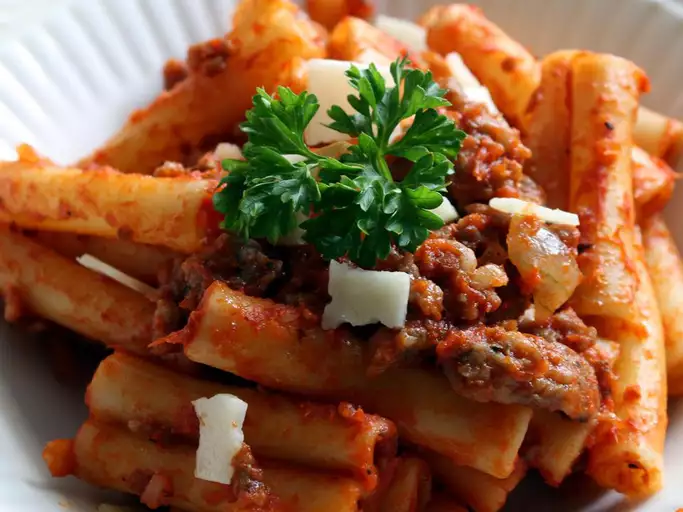

Description
This is an old family recipe. My family loves it. It's quick and easy. Elbow macaroni and ground beef are combined in a tomatoey sauce. The kids will eat this one!
Pro Tip: Don't forget to add a google ad, you can earn 100th of a cent and while annoying people!
Ingredients
- 1 (16 ounce) package uncooked elbow macaroni
- 1 pound lean ground beef
- 1 onion, chopped
- 2 (10.75 ounce) cans condensed tomato soup
- salt and pepper to taste
Instructions
- Cook macaroni according to package directions.
-
Meanwhile, in a separate large skillet over medium high heat,
saute the ground beef and the onion for 5 to 10 minutes, or
until meat is browned and crumbly. Drain thoroughly and leave the
meat and onion in the skillet. Pour the two cans of tomato soup into
the skillet and stir well to combine.
-
When noodles are done, drain thoroughly and return noodles to the pot.
Add the hamburger mixture from the skillet to the pot. Mix well and
season with salt and pepper to taste.